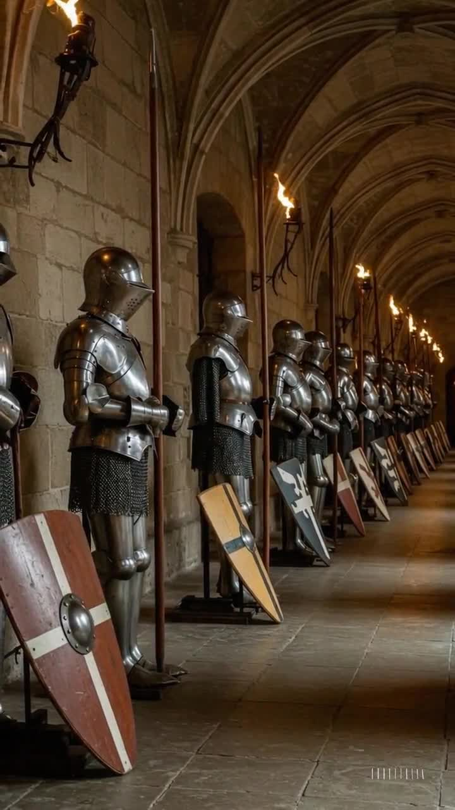

Welcome to the Sovereign Order
Beneath this banner stands a company sworn to discipline, steel, and service. The Sovereign Order is presented as a knightly guild where contracts are honored, dangers are met head-on, and records are kept with care.
This website was built as a web development project and combines fantasy-inspired design with strong structure, accessibility, responsive layout, and consistent navigation across the site.
The Banner of the Order

The Sovereign Order takes its identity from symbols of vigilance, strength, and loyalty. Its heraldry reflects a house prepared for conflict, duty, and defense.
What You Will Find Here
- A themed homepage with a consistent fantasy heraldry design
- Information about the Order and its sworn purpose
- A service ledger showing the contracts and duties accepted
- Guild resources with useful external links
- A working contact form for sending messages to the keep
Why This Site Was Built
This project was created to demonstrate HTML, CSS, and JavaScript in a complete multi-page website. It also applies core web design principles such as semantic page structure, mobile-friendly layout, readable navigation, alternate text for images, and basic search engine optimization.
Rather than using a generic layout, the site was designed around a custom fantasy concept to give it a distinct identity and a more engaging visual style.
Call to Service
Whether you seek knowledge of the Order, wish to review its services, or send word to the keep, the pages of this site are open to you.